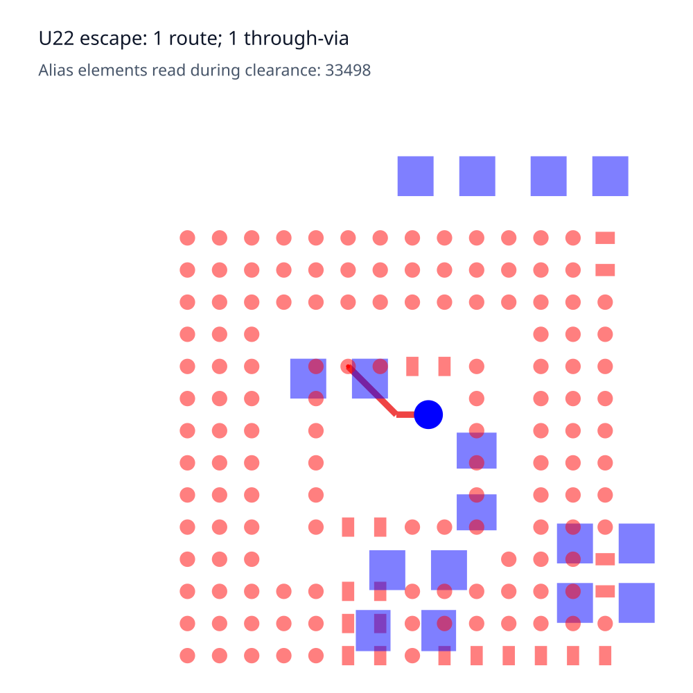
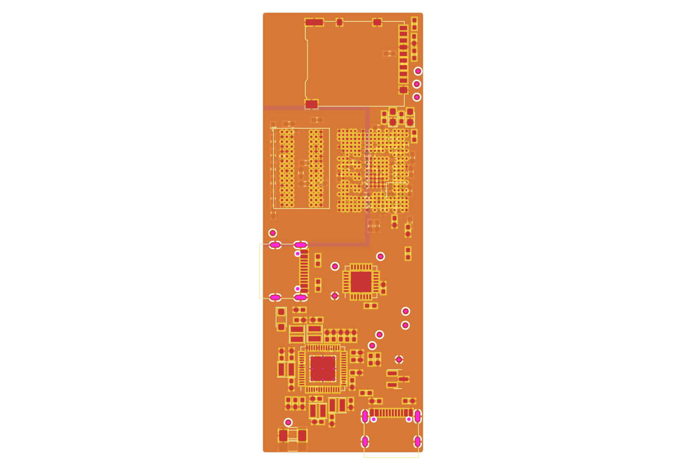
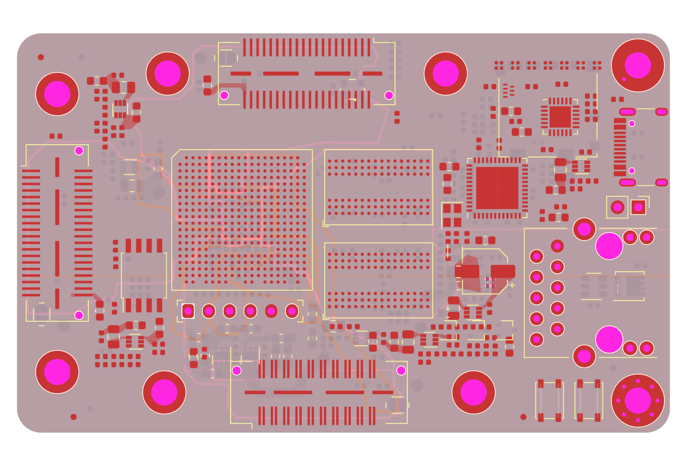

Final validation treated crossed foreign copper-pour reservations as solid via obstacles, contradicting route search and independent copper DRC. The nine-line fix applies the existing antipad rule while retaining both terminal-layer pour checks and all physical pad/hole checks.
Isolated native plane-bus acceptance: 28/349 (8.0%) → 292/349 (83.7%), +75.6 percentage points. Every declared plane bus from the six first-fanout captures was tested separately. All 349 paired inputs match; all 292 accepted outputs pass independent copper DRC against the original full input. No case times out. All 28 previously accepted routes have identical copper hashes.
Board
Before, isolated plane buses
After, isolated plane buses
OrangeCrab rev 0.2.1 ECP5 DDR3
0/166
134/166
Allwinner H616 Devboard DDR3
28/62
61/62
ButterStick r1.0
0/38
20/38
Glider mainboard
0/43
43/43
i.MX6 Demo Board
0/20
17/20
iCE/Pi CM0 SBC
0/20
17/20
These cases do not establish that the buses can route together. They retain every original obstacle and fabrication rule, but select one declared plane bus at a time. The actual whole-board results are below.
Native routed before / after
U22 pin101: one declared plane drop, all 344 regional obstacles, Ø0.45/0.2 mm via and 0.1 mm clearance. The searched copper is identical. Final findings fall from two to zero (100% fewer); the actual FanoutSolver changes from rejection to acceptance. Independent copper DRC reports zero issues in both.

Before: legal candidate rejectedAfter: same candidate accepted
Full-board routing remains blocked
0/6 complete boards; 0/12 DDR bus phases start; zero accepted traces or vias in both versions. All saved input copper was removed. The runtime core build manifests, source hashes, native fanout inputs, geometry and net-membership audits are preserved. All non-error Circuit JSON records match across versions.
Board
Best first fanout before
After
Full elapsed s
Assignments
Accepted traces / vias
OrangeCrab rev 0.2.1 ECP5 DDR3
118/273
118/273
610.7 → 609.4
15 → 19
0 / 0
Allwinner H616 Devboard DDR3
88/174
88/174
604.5 → 604.4
224 → 220
0 / 0
ButterStick r1.0
62/91
62/91
485.3 → 497.5
256 → 256
0 / 0
Glider mainboard
60/95
60/95
376.7 → 452.7
256 → 256
0 / 0
i.MX6 Demo Board
8/32
8/32
460.2 → 410.1
256 → 256
0 / 0
iCE/Pi CM0 SBC
7/32
7/32
268.8 → 259.5
256 → 256
0 / 0
Partial first-fanout counts are not connected full-board nets. A 600 s routing budget and 660 s process limit apply. Budget-limited search counts can vary by worker; those differences are not attributed to this validation fix. Whole-board elapsed times are single unpaired failed-route observations, not successful solve-time measurements.
Complete-solution validation runs only after all requests in a fanout are routed. The original 32-connection iCE/Pi fanout remains partial and does not reach that stage. Its native profile spends 93.7% of sampled time in plane-route construction/search and 52.2% in buildPlan (inclusive rows overlap). Earlier joint candidate generation and mutual clearance remain the next full-board investigation target.
Regression checks
Fanout31: 30 solved and 42 timed out in both versions, with all 72 inputs, outcomes, routed counts and via counts unchanged. The focused controls cover crossed pours, foreign source/target pours, real pads and non-plated through-holes. Source format and full typecheck are checked on the final commit; the repository test shards run on macOS ARM as prescribed.
Source-built core metadata advertises the next patch via getCoreVersion(); core-build.json records the actual frozen 0.0.2419 package and Git revision. No fabrication-rule, boundary-padding or solver-order changes were made.
OrangeCrab rev 0.2.1 ECP5 DDR3
Before: full PCB after failed fanoutAfter: full PCB after failed fanout
Allwinner H616 Devboard DDR3
Before: full PCB after failed fanout

After: full PCB after failed fanout
ButterStick r1.0

Before: full PCB after failed fanoutAfter: full PCB after failed fanout
Glider mainboard
Before: full PCB after failed fanoutAfter: full PCB after failed fanout
i.MX6 Demo Board
Before: full PCB after failed fanoutAfter: full PCB after failed fanout
iCE/Pi CM0 SBC
Before: full PCB after failed fanoutAfter: full PCB after failed fanout
Reproduce
Use Bun 1.4.3 and the exact source refs in provenance.json. The sources directory contains the six TSX models, original geometry/net membership, rendering/audit harness and pinned runtime lockfile. sources/reproduce-comparison.sh matches the Blacksmith full-board commands; workflows contains the exact executed CI definitions. Isolated reports retain every case, including failures.